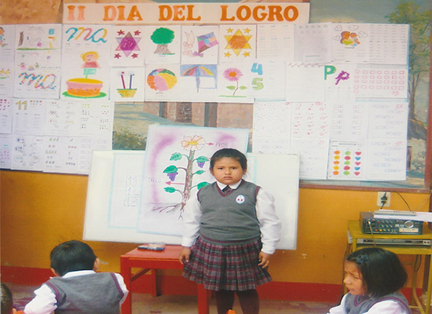

PROPUESTA PEDAGÓGICA
¿CÓMO ENTENDEMOS LA EDUCACIÓN?
Hoy en día los maestros anhelamos una educación centrada en los aprendizajes significativos donde nuestro rol es el de ser el facilitador, acompañar y orientar a los niños y niñas a que construyan sus conocimientos partiendo de sus saberes previos, de su interrelación en grupo, considerando el medio socio – cultural y su propia investigación, experimentación y trabajo en conjunto. Entendemos que la acción educativa son los aprendizajes en sí de los estudiantes.EL APRENDIZAJE
Es un proceso de construcción del conocimiento. El estudiante es el principal constructor del conocimiento, construye aprendizajes significativos cuando hace uso de experiencias y saberes previos, recibiendo la orientación oportuna y efectiva de su maestro (a).ENSEÑANZA
Constituye el conjunto de instrumentos que utiliza la maestra en el proceso que siguen los niños para la construcción de su conocimiento. Así el nuevo rol de la docente es orientar el proceso de aprendizaje de los niños y niñas y en forma significativa crear las condiciones necesarias para que éste proceso sea lo más rico posible.PERFIL INSTITUCIONAL
Nuestra Institución Educativa, como un centro de formación, se propone el siguiente perfil:- Formador integral que toma los aspectos: Valorativos, académicos y conductuales para constituirse en una opción verdaderamente educativa.
- Acogedor y familiar, tanto en sus ambientes; es decir agradable y motivador para la aceptación en los estudiantes.
- Organizado y coherente en sus estamentos, servicios y recursos; proporcionando una educación de calidad.
- Disciplinado en su organización y en sus actitudes, de tal manera de crear un clima institucional; caracterizado por su puntualidad, orden, formalidad y respeto.